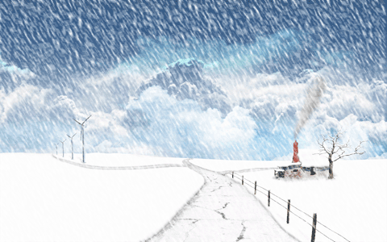

气候
水对气候具有调节作用。大气中的水汽能阻挡地球辐射量的60%，保护地球不致于被冷却。海洋和陆地水体在夏季能吸收和积累热量，使气温不致过高；在冬季则能缓慢地释放热量，使气温不致过低。 海洋和地表中的水蒸发到天空中形成了云，云中的水通过降水落下来变成雨，冬天则变成雪。落于地表上的水渗入地下形成地下水；地下水又从地层里冒出来，形成泉水，经过小溪、江河汇入大海。 雨水(4张) 形成一个水循环。 雨雪等降水活动对气候形成重要的影响。在温带季风性气候中，夏季风带来了丰富的水气，夏秋多雨，冬春少雨，形成明显的干湿两季。 此外，在自然界中，由于不同的气候条件，水还会以冰雹、雾、露水、霜等形态出现并影响气候和人类的活动。 折叠对地理 在地球表面有71%被水资源覆盖，从空中来看，地球就是个蓝色的星球。水侵蚀岩石土壤，冲淤河道，搬运泥沙，营造平原，改变地表形态。 地球表层水体构成了水圈，包括海洋、河流、湖泊、沼泽、冰川、积雪、地下水和大气中的水。由于注入海洋的水带有一定的盐分，加上常年的积累和蒸发作用，海水和大洋里的水都是咸水，不能被直接饮用。某些湖泊的水也是含盐水，比如：死海。世界上最大的水体是太平洋。北美的五大湖是最大的淡水水系。欧亚大陆上的里海是最大的咸水湖。 地球上水的体积大约有 1,360,000, 000 立方公里。海洋占了1,320,000,000立方公里（97.2%）；冰川和冰盖占了25,000,000立方公里（1.8%）；地下水占了13,000,000立方公里（0.9%）；湖泊、内陆海，和河里的淡水占了250,000 立方公里（0.02%）；大气中的水蒸气在任何已知的时候都占了13,000立方公里（0.001%）。 雨水的药用功能 雨水，又名无根水，中医认为其性轻清，味甘淡，诸水之上也。夏日尤佳。饮之可以去病。（刚下的雨水中含有大量尘埃，特别在现代化的和工业污染严重的城市，成分相当复杂，甚至可能含有致病微生物。但在未受污染的地方，干净的雨水功能依旧）。
水资源介绍